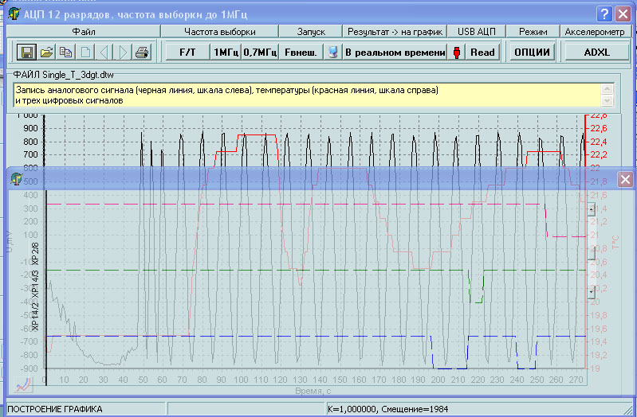
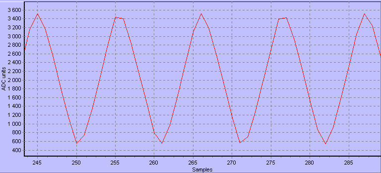
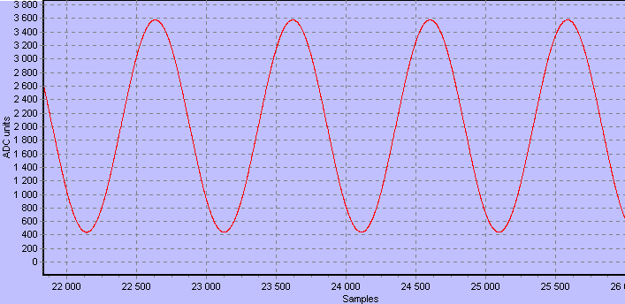
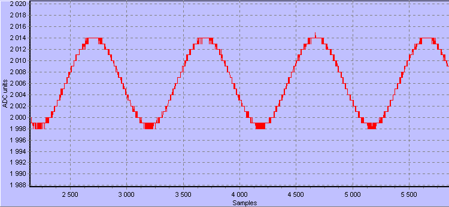
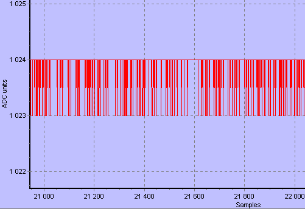
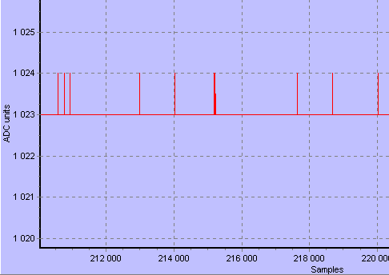

Биполярный (±1В/±2,5В) или униполярный (0...-2В, 0...-5В или 0...+2В, 0...+5В) сигнал. Управляемые частота выборки/время накопления. Внутренний/внешний источник тактирования выборок АЦП. При макс. частоте выборки 1,053МГц записывается 30000 выборок, при частотах выборки 702кГц и ниже записывается 240000 12-разрядных выборок в размещенную на плате память.
В любом из режимов работы параллельно с записью аналогового сигнала записываются 3 цифровых сигнала, их можно отобразить на графике.
Старт от компьютера или внешним сигналом.
Подключение
двухосевого
акселерометра ADXL202 (до 2g) или ADXL210 (до 10g).
подробнее
узнать о работе
12-разрядного АЦП
можно,
ознакомившись с файлом ПОМОЩИ
Приложение:
-возможность
ввода
коэффициентов преобразования для подключаемых
пользователем устройств, наименований осей
(подключив свой датчик, например, датчик
скорости, вы сможете отображать на графике
скорость, а не напряжение, измеряемое АЦП)
-документирование - в файле данных сохранятся
коэффициенты, введенные вами для подключаемого к
АЦП датчика, наименование измеряемого датчиком
параметра, есть возможность сохранения данных
или фрагментов в текстовый файл
-оригинальное отображение цифровых сигналов
позволяет наблюдать их при любом изменении
масштаба графика без взаимного перекрывания и
без помех для просмотра аналогового сигнала при
любом изменении масштаба,
Наличие памяти 512Кбайт, возможность автономной работы (при питании от батарейки), что позволяет установить АЦП, например, на подвижный объект, на котором разместить персональный компьютер или ноутбук невозможно, считывание результатов можно произвести по окончании запиcываемого процесса, подключив АЦП к компьютеру.
Предусмотрено подключение двухосевого акселерометра ADXL202 (ADXL210), что позволяет измерять ускорения по двум осям, а также вычислять угол наклона объекта, на котором закреплен акселерометр.
максимальная частота выборки 1,053МГц, при которой записывается 30000 выборок
при частотах 702кГц и ниже записывается 30000хN выборок (где N - от 1 до 8). Частота выборки/время измерения, а также число выборок определяются пользователем.
Данные
накапливаются в
памяти 512Кх8, затем
передаются в компьютер для хранения и отображения. Время передачи
240000
выборок (480000 байт) не более 7с.
Компьютерное
приложение позволяет просмотреть график,
сохранить данные, добавить комментарии, просмотреть сохраненные
данные, скопировать графики для вставки в Word, а также сохранить
выбранные по графику фрагменты в текстовом виде.
Тактовый сигнал выборки может формироваться как контроллером, так и внешним устройством (режимы внутреннего и внешнего тактирования).
Три джампера обеспечивают выбор диапазона аналогового сигнала ( 0...-2В, 0...-5В, 0...+2В и 0...+5В для униполрного, -1В..+1В или -2,5В...+2,5В для биполярного сигнала).
Один разъем устройства обеспечивает подключение сигнального кабеля.
На второй разъем может передаваться
-в контроллер внешний тактовый сигнал - при работе в режиме с внешним тактированием
-из контроллера импульсы, тактирующие выборки АЦП
Питание - по USB-кабелю от
компьютера,
возможно питание от внешнего источника +5В,
потребление 60мА.
Можно питать контроллер от батарейки 4,5В, потребление составит 50мА,
при этом возможно небольшое ограничение сильного сигнала сверху.
Обеспечено подключение двухосевых
(или одноосевых) акселерометров с
широтно-импульсными выходами ADXL202 (измеряет
ускорение до 2g), ADXL210 (до 10g).
Обеспечено
подключение термодатчика DS18B20.
Режим работы в реальном времени - раз
в секунду
выполняется измерение, результат которого выводится на график в
реальном времени, параллельно на график может выводиться значение
температуры.
Управление внешними объектами по 2-м
выходным
линиям по условиям, задаваемым пользователем, в зависимости от уровня
измеряемого сигнала и температуры.
В памяти микронтроллера размещен
BootLoader -
загрузчик, позволяющий пользователю самостоятельно записывать
обновленные программы в память микроконтроллера по USB. Поставляется
также соответствующее программное обеспечение для компьютера .
Это
базовый блок, на
который по необходимости можно накручивать
программное обеспечение. колориметр
колориметр колориметр
Возможно добавление режима запуска преобразования по превышению уровня сигнала, а также по превышению градиента сигнала задаваемого программно порога
Контроллер
может
использоваться как запоминающий осциллограф с
высоким разрешением. Возможна организация
записи до десяти цифровых сигналов.
Можно скачать архив с Приложением (обновление 20.12.2008), это позволит просмотреть файлы, находящиеся в Архиве данных , записанные АЦП 12 бит (сигналы от акселерометра на качающемся калибраторе, также сигналы при измерении вибраций во время выполнения броска баллистическим гравиметром и др.). Имеющийся в архиве Приложения файл помощи Help поможет ознакомиться с возможностями программы.
Работа с графиками приложения (масштабирование, перемещение фрагментов) в обучающем ролике .Измерение
в реальном времени
измерения
выполняются раз в секунду,
их результаты в реальном времени выводятся на график
красная линия - график температуры,
в нижнем окне - графики цифровых
сигналов
Обеспечивается совмещение окон по
горизонтали во
время измерения, в том числе при изменении масштаба пользователем.
Во время измерения окно с цифровыми
сигналами
можно при необходимости

Для подробного просмтора графика можно увеличить масштаб, не останавливая измерений.
По окончании измерений результат можно сохранить в файл. При построении графиков по данным из файла они размещаются в одном окне.
Использование двух окон в режиме реального времени объясняется тем, что
масштаб графика пересматривается после поступления каждой точки. При
размещении в том же окне и цифровых графиков для них пришлось бы каждый
раз пересчитывать масштаб и перестраивать их заново.
. 




________________________
1.) Можно ли плату АЦП поставить на небольшой подвижный объект без компьютера, запустить измерение, а потом подключить компьютер и считать записанные данные из памяти платы? Я хочу подключить АЦП к датчику скорости, запитать их от батарейки, засунуть в контейнер, который будет двигаться, запустить измерение (желательно дистанционно), а после движения считать данные.
________________________
Да, для этого воспользуйтесь последней версией Приложения (обновление 20.12.2008), на панель ЗАПУСК добавлена кнопка Read.
Последовательность действий:
-уберите джампер питания АЦП от USB (J4)
-к контактам +5 и 0V припаяйте провода, для питания будет достаточно батарейки +4,5В
-установите АЦП в контейнер, подключите к датчику и к USB компьютера, подайте питание
-запустите измерение в режиме ВНЕШНИЙ ЗАПУСК ПО СПАДУ
-отключите кабель USB
-для запуска измерения нужно замкнуть контакты 4 и 6 платы АЦП на короткое время
-по окончании измерения (отсчитывать время измерения нужно от момента начала запуска, а не по индикатору в приложении) подключите кабель USB к плате АЦП, нажмите кнопку ПОДКЛЮЧИТЬ АЦП К КОМПЬЮТЕРУ для восстановления связи, затем кнопку Read для считывания данных
Как замкнуть контакты:
для датчика скорости, возможно, будет достаточно выбрать продолжительность измерения, большую, чем время движения, на пару секунд, запустить измерение, отключить кабель USB, запустить движение объекта с датчиком и АЦП.
Если действительно необходимо выполнить запуск дистанционно, можно замкнуть контакты 4 и 6 транзисторным ключом, управляемым
-внешним таймером
-фотоприемником - источник света можно установить в том месте пути, с которого хотелось бы начать измерение
-приемником радиосигнала - передатчиком может управлять оператор